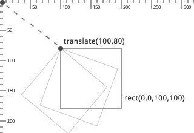
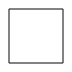
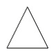
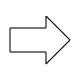
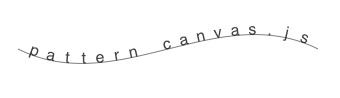

pattern.canvas
The canvas.js module is a simple and robust JavaScript API for the HTML5 <canvas> element, which can be used to generate interactive 2D graphics in a web browser, using lines, shapes, paths, images and text.
The module is part of the pattern package: web | db | en | search | vector | graph.
|
Standalone download: |
Documentation
|
Drawing |
Data |
Introduction
A canvas.js animation is written in JavaScript code as part of a HTML file. It will run in all modern web browsers (Chrome, Firefox, IE7+, Safari, Opera). Performance may vary from browser to browser. Animations on mobile devices are (currently) quite slow.
Quick overview
Below is an example script. The HTML source imports the JavaScript canvas.js module with the standard set of drawing commands. Note the <script type="text/canvas"> that defines the animation. It has a setup() function that will be executed once when the animation starts, and a draw() function that will be executed each animation frame.
<!doctype html>
<html>
<head>
<script type="text/javascript" src="canvas.js"></script>
</head>
<body>
<script type="text/canvas">
function setup(canvas) {
canvas.size(500, 500);
}
function draw(canvas) {
canvas.clear();
translate(250, 250);
rotate(canvas.frame);
rect(-150, -150, 300, 300, {fill: color(1,0,0,1)});
}
</script>
</body>
</html>Syntax
Functions can have parameters with default values. For example, the star() function takes two to five parameters in the right order (x, y, points, outer, inner). If you supply four parameters, the last parameter assumes a default value (inner=50). If you need to define the last parameter, you must define all parameters preceding it. Contrarily, some functions have optional, named parameters. For example, the rect() command takes four parameters and a fifth, optional roundness.
If you want to set roundness, you must supply it by name and enclosed in curly braces. If the documentation mentions other optional arguments you can supply these as well inside the curly braces, in any order. For example:
rect(50, 50, 100, 100 {roundness: 0.2, fill: new Color(1,0,0)});
Editor
You can use the online editor (with syntax coloring) for testing small scripts. It is experimental but it should run in Chrome, FireFox and Safari. You can import example scripts from pattern/examples/07-canvas/ or export new scripts (remember to change the <script> link to canvas.js in the HTML source). The editor will provide a hint when an error occurs, but the best way to track errors is to use the browser's developer tools (e.g., FireBug).
pattern/examples/07-canvas/06-image.html
Coordinate system
By, default, the canvas origin (0,0) is located in the upper-left corner. The origin can be moved (or translated) with the translate() function, where positive numbers define the amount of pixels to move right and down.
|  | When the origin is moved to (100,80), all shapes drawn at (0,0) originate from this point. A shape is drawn, rotated and scaled from its top-left corner, except ellipses which are always drawn from their center. |
 |
When the origin is moved to (100,80), and a rectangle with a width of and height of 100 is then drawn at (-50,-50), it will have its center at the origin point, as illustrated in the figure on the left. |
Color
The Color object can be used to store a color in terms of R,G,B,A channel values. It can be passed to background(), fill() and stroke() to set the current drawing color for primitives.
A color can be initialized with either four values (R,G,B,A), three values (R,G,B), two values (grayscale + alpha) or one value (grayscale, a Color, or an array). An optional base parameter defines the range of the given values (e.g. 0-255 instead of 0.0-1.0). An optional colorspace defines the color space of the given parameters: HSB expects hue, saturation, brightness, alpha instead of red, green, blue, alpha.
var clr = new Color(r, g, b, a, {base: 1.0, colorspace: RGB});var clr = new Color(r, g, b);
var clr = new Color(grayscale, a);
var clr = new Color(grayscale);
var clr = new Color(clr);
clr.r // Red value between 0.0-1.0. clr.g // Green value between 0.0-1.0. clr.b // Blue value between 0.0-1.0. clr.a // Alpha value between 0.0-1.0.
clr.rgba() // Returns an array of [R,G,B,A]-values.
clr.map({base: 1.0, colorspace: RGB) // Returns an array of [R,G,B,A]-values.
clr.rotate(angle) // Returns a new Color. clr.copy()
- Color.map() returns an array of channel values mapped to the given base and colorspace.
For example: clr.map({base: 255, colorspace: HSB})
yields an [H,S,B,A] array of values between 0-255. - Color.rotate() returns a color with hue rotated on the RYB color wheel by the given angle.
Color state functions
The background(), fill() and stroke() functions set the current canvas background, shape fill and shape outline color respectively. All subsequently drawn primitives (e.g. lines, ellipses) will use the current fill and outline color. Each function takes the same parameters as a Color object (R,G,B,A | R,G,B | grayscale + alpha | Color). Each function also returns its current setting.
The strokewidth() function sets the width of the outline.
background(r, g, b, a)
fill(r, g, b, a)
stroke(r, g, b, a)
nofill()
nostroke()
strokewidth(width)
Color filters
A color filter returns a new Color that is a variation on the given color, useful for constructing a set of colors that look aesthetically pleasing together. The darker() and lighter() functions modify the color's brightness in HSB, complement() returns the color that is opposite on the RYB color wheel, analog() returns a random adjacent color on the color wheel.
darker(clr, step=0.2) // Returns a new Color.
lighter(clr, step=0.2) // Returns a new Color.
complement(clr) // Returns a new Color.
analog(clr, angle=20, d=0.1) // d = random saturation & brightness.
Color gradient
The Gradient object can be used to create smooth LINEAR or RADIAL transition between two Color objects. It can be passed to fill() instead of a solid color.
var g = new Gradient(clr1, clr2, {type: LINEAR, x: 0, y: 0, spread: 100, angle: 0});Shadows
The shadow() function enables drop shadows for all subsequently drawn shapes:
shadow(dx=6, dy=6, blur=5, alpha=0.5)
noshadow()
Transformation
The translate() function sets the current origin point for primitives, paths, images and text. By default the origin is (0,0), the upper left corner of the canvas. With translate(100,100), the current origin becomes (100,100). If translate(-50,0) is then called, the current origin becomes (50,100). In the same way, rotate(30) followed by rotate(60) sets the current rotation for all subsequent shapes to 90.
The push() and pop() functions create a branch in the current transformation state. The effect of translate(), rotate() and scale() after a push() only lasts until pop() is called. The reset() function resets all transformations (origin is (0,0), rotation is zero, scale is 100%).
translate(x, y) // Push horizontal and vertical offset.
rotate(degrees) // Push angle in degrees.
scale(x, y=None) // Push relative scale: 1.0 = 100%
push()
pop()
reset()
Primitives
Geometric primitives are the simplest shapes that can be drawn to the canvas: line, rectangle, triangle, ellipse, and two additional shapes, arrow and star.
 line |
 rect |
 triangle |
 ellipse |
 arrow |
 star |
line(x0, y0, x1, y1)
rect(x, y, width, height, {roundness: 0.0})triangle(x1, y1, x2, y2, x3, y3)
ellipse(x, y, width, height)
arrow(x, y, width)
star(x, y, points=20, outer=100, inner=50)
Drawn primitives will adhere to the current color and transformation state. The color state can be overridden by passing an optional fill, stroke, strokewidth to the function, for example:
function draw(canvas) {
canvas.clear();
nofill();
stroke(0, 0.25);
strokewidth(1);
rect( 50, 50, 50, 50);
rect(110, 50, 50, 50, {stroke: new Color(0)});
rect(170, 50, 50, 50);
}
Path
Path element
The PathElement object defines a single point in a Path. Its cmd property defines the kind of segment from the previous point to this point: MOVETO, LINETO, CURVETO or CLOSE. For curve segments, the point has ctrl1 and ctrl2 properties that define the control handles of the curve:
- ctrl1 describes the direction and magnitude of the curve starting from the previous point,
- ctrl2 describes the direction and magnitude of the curve ending in this point.
var pt = new PathElement(x, y, cmd);
pt.cmd // MOVETO, LINETO, CURVETO, CLOSE pt.x // Horizontal offset. pt.y // Vertical offset. pt.ctrl1.x pt.ctrl1.y pt.ctrl2.x pt.ctrl2.y
pt.copy() // Returns a copy of the point.
Bézier Path
The Path object contains an array of PathElement objects. The points in a path can easily be traversed in a for-loop. New points can be added to the path with the moveto(), lineto(), curveto() methods.
var path = new Path(path=null);
path.array path.array.push(pathelement)
path.moveto(x, y) path.lineto(x, y) path.curveto(x1, y1, x2, y2, x3, y3) path.closepath()
path.rect(x, y, width, height, {roundness: 0.0})
path.ellipse(x, y, width, height)path.length() // Returns the length of the path.
path.contains(x, y) // Returns true if (x,y) in path.
path.angle(t) // Returns tangent angle at t.
path.point(t) // Returns PathElement at t.
path.points(amount, {start: 0.0, end: 1.0})
path.draw({fill: Color, stroke: Color, strokewidth: 1.0}) path.copy()
- Path.points() and Path.point() return DynamicPathElement objects.
These are dynamically calculated using linear interpolation math based on a given time t
(where t=0.0 is the start of the path and t=1.0 is the end of the path). - Path.draw() draws the path to the canvas with a given precision for curves.
Optional parameters include fill, stroke and strokewidth.
Path state functions
The beginpath() function starts a new path at (x,y). Points can be added to it with moveto(), lineto(), curveto() until endpath() is called and the path is drawn/returned.
The drawpath() function draws a Path using the current color and transformation state. The color state can be overridden by passing an optional fill, stroke and/or strokewidth to the function.
autoclosepath(close=true)
beginpath(x, y)
moveto(x, y)
lineto(x, y)
curveto(x1, y1, x2, y2, x3, y3)
closepath()
endpath({draw: true}) // Returns a Path. drawpath(path, {fill: Color, stroke: Color, strokewidth: 1.0}) Path iteration
The directed() function iterates over the points in a path (Path or array of PathElement objects) and passes the current angle and point to a given callback function. The angle represents the direction of a point in the path. To get the normal (i.e. perpendicular) of a point, rotate its angle by +90 or -90.
directed(points, callback)
This is useful if you want to have shapes following a path, for example, to fit text on a path:
function setup(canvas) {
path = new Path();
path.moveto(100, 50);
path.curveto(200, 100, 300, 0, 400, 50);
txt = 'pattern canvas.js'; // We'll draw each character separately.
}
function draw(canvas) {
canvas.clear();
fill(0);
fontsize(16);
var i = 0;
var points = path.points(txt.length, {start: 0.05, end: 0.95});
directed(points, function(angle, pt) {
push();
translate(pt.x, pt.y);
rotate(angle);
text(txt[i], -textwidth(txt[i])/2, 0);
pop();
i++;
});
drawpath(path, {fill: null, stroke: [0,0,0,0.5]});
}|  |
Clipping mask
Drawing functions between beginclip() and endclip() are constrained to the shape of the given path.
beginclip(path)
endclip()
Image
The image() function draws an image to the canvas. It can load JPEG, PNG and GIF from a given URL. However, images are loaded asynchronously – i.e., the browser is idle while the image downloads in the background. The safe way is to preload an Image object in setup():
function setup(canvas) {
images = [];
images.push(new Image('http://www.clips.ua.ac.be/media/pattern_schema.gif'));
}
function draw(canvas) {
canvas.clear();
image(images[0], 0, 0);
}The Image object can be used to load an image from a http:// location (file:// will not work), a data: string, from another Image, and from Pixels, OffscreenBuffer or Canvas. Optionally, it will be rescaled to the given width and height. Note that for security reasons you cannot get Pixels of remote images (i.e., from a URL on another server).
var img = new Image(path, x=0, y=0, width=null, height=null, alpha=1.0);
img.x // Horizontal offset. img.y // Vertical offset. img.width // Image width in pixels. img.height // Image height in pixels. img.alpha // Image opacity (0.0-1.0).
img.busy() // Still preloading? (true|false)
img.copy()
img.draw(x=0, y=0, {width: null, height: null, alpha: 1.0})Image state functions
The image() function draws an image to the screen. If optional parameters are given, they will take precedence over any property in the given Image.
image(img, x, y, {width: null, height: null, alpha: 1.0})imagesize(img) // Returns a [width, height]-array.
Image pixels
The Pixels object can be used to retrieve an array of channel values (0-255) for each pixel in an image. Values can be modified, after which Pixels.update() must be called to reflect any changes to Pixels.array. The original image is not modified. A Pixels object can be passed to the image() function to draw it to the canvas.
var pixels = new Pixels(img);
pixels.width // Image width in pixels. pixels.height // Image height in pixels. pixels.array // Array of width * height * 4 values (0-255).
pixels.get(i, rgba) // Returns an [R,G,B,A]-array. pixels.set(i, rgba) pixels.map(callback) pixels.update() pixels.image() pixels.copy()
- Pixels.map() applies a function to each pixel. Function takes (and returns) an [R,G,B,A]-array.
- Pixels.get() returns pixel i as an [R,G,B,A]-array with values between 0-255.
- Pixels.set() sets pixel i from an [R,G,B,A]-array.
To iterate the pixels row by row:
var p = new Pixels(img);
for (var i=0; i < p.height; i++) {
for (var j=0; j < p.width; j++) {
var rgba = p.get(i * p.width + j);
}
}
Text
The text() function can be used to draw a string of text to the canvas. The font(), fontsize(), fontweight() and lineheight() functions set the current text state. Each function also returns its current setting. The default font is 12px normal sans-serif with 1.2em line height.
font(fontname)
fontsize(fontsize)
fontweight(fontweight) // NORMAL, BOLD, ITALIC, BOLD+ITALIC
lineheight(lineheight)
The text() command draws a string using the current color, transformation and text state:
text(str, x, y)
textwidth(str)
textheight(str)
The state can be overridden by passing an optional font, fontsize, fontweight, lineheight and/or fill to the functions:
text("Hello world", 0, 0, {
fill: new Color(1,0,0),
font: "Georgia",
fontweight: BOLD
});
Mouse & keyboard
The Mouse object stores the current state of the mouse input device (or touch event). It can be retrieved with the canvas.mouse property in the main draw() loop.
var mouse = canvas.mouse;
var mouse = new Mouse(element);
mouse.parent // Element to track. mouse.x // Horizontal position. mouse.y // Vertical position. mouse.relative_x // Relative (0.0-1.0) to Canvas.width. mouse.relative_y // Relative (0.0-1.0) to Canvas.height. mouse.pressed // Mouse is pressed? (true|false) mouse.dragged // Mouse is dragged? (true|false) mouse.drag.x // Drag distance from previous x. mouse.drag.y // Drag distance from previous y.
mouse.cursor(mode) // DEFAULT, CROSS, HAND, HIDDEN, TEXT, WAIT
mouse.onmove() mouse.onpress() mouse.onrelease() mouse.ondrag()
Custom event handlers can be attached to Mouse. The function takes a parameter mouse, which is the Mouse receiving the event. The canvas can be accessed with mouse.parent.canvas. To draw to this canvas during the event, first call its focus() method.
function setup(canvas) {
canvas.mouse.ondrag = function(mouse) {
mouse.parent.canvas.focus();
ellipse(mouse.x, mouse.y, 2, 2);
};
}
Canvas
The Canvas object manages the animation container. With <script type="text/canvas">, there is no explicit need to initialize a new canvas in your script. It will be created for you and passed as a parameter canvas to the draw() and setup() functions in your script:
<!doctype html>
<html>
<head>
<script type="text/javascript" src="canvas.js"></script>
</head>
<body>
<script type="text/canvas" loop="true">
function setup(canvas) {
canvas.size(500, 500);
}
function draw(canvas) {
canvas.clear();
// Add drawing code here.
}
</script>
</body>
</html>Custom animations require a HTML <canvas> element and a window.onload() that binds the element to a Canvas object and assigns a draw() and a setup() function to the canvas:
<!doctype html>
<html>
<head>
<script type="text/javascript" src="canvas.js"></script>
<script>
function setup(canvas) {
canvas.size(500, 500);
}
function draw(canvas) {
canvas.clear();
// Add drawing code here.
}
window.onload = function() {
canvas = new Canvas(document.getElementById("canvas1"));
canvas.setup = setup;
canvas.draw = draw;
canvas.run();
}
</script>
</head>
<body>
<canvas id="canvas1" width="500px" height="500px"></canvas>
</body>
</html>The Canvas object takes a <canvas> element:
var canvas = new Canvas(element);
canvas.id canvas.element // HTML <canvas> element. canvas.width // Element width. canvas.height // Element height. canvas.frame // Current animation frame (start = 1). canvas.fps // Frames per second. canvas.mouse // Mouse object. canvas.variables // Widget variables.
canvas.size(width, height)
canvas.setup() canvas.draw() canvas.clear() canvas.run(fps) canvas.pause() canvas.stop() canvas.focus() // Sets the canvas as current drawing context.
canvas.image() // Returns the canvas as an Image. canvas.save() // Returns the canvas as PNG data.
- Canvas.setup() is meant to be overridden. It runs once at the start of the animation.
- Canvas.draw() is meant be overridden. It runs each frame.
- Canvas.save() and Canvas.image() will throw an error if the canvas contains remote images
(i.e., from a URL on a different server). This is for security reasons, see CORS.
Widgets
Widgets (e.g., buttons, sliders) give you the possibility to create apps that users can interact with without diving into the JavaScript code. The widget() function creates a widget linked to the given Canvas. The value of the widget can be retrieved as Canvas.variables[variable]. The type can be STRING or NUMBER (a field), BOOLEAN (a checkbox), RANGE (a slider), LIST (a dropdown list) or FUNCTION (a button).
Optionally, a default value can be given. For lists, this is an Array. For sliders, you can also set min, max and step. For functions, a callback(event) must be given. To get the canvas in the callback function, use event.target.canvas. If the function does drawing, call event.target.canvas.focus() first.
The widget() function will generate a <div id="[canvas.id]_widgets" class="widgets">, if it does not yet exist. The <div> is added to the page below the canvas. Optionally, a different parent HTML element can be given. The parent contains all canvas widgets, each wrapped in a <span class="widget">.
widget(canvas, variable, type, {
parent: null,
value: null,
min: 0,
max: 1,
step: 0.01,
callback: function(event) { }
})For example, the following script comes with buttons to start and pause the animation:
function setup(canvas) {
widget(canvas, "start", FUNCTION, {callback: function(e) {
e.target.canvas.run();
}});
widget(canvas, "pause", FUNCTION, {callback: function(e) {
e.target.canvas.pause();
}});
}
function draw(canvas) {
canvas.clear();
translate(200, 200);
rotate(canvas.frame);
rect(-75, -75, 150, 150);
}JSON
>>> from pattern.db import Datasheet, STRING, INTEGER
>>> ds = Datasheet(fields=[('name', STRING), ('count', INTEGER)])
>>> ds.append(( 'chickens', 12))
>>> ds.append(( 'penguins', 26))
>>> ds.append(('sombreros', 9))
>>> open('data.js', 'w').write('var data = ' + ds.json + ';')This generates a data.js file that defines a data variable:
var data = [
{'name': 'chickens', 'count': 12},
{'name': 'penguins', 'count': 26},
{'name': 'sombreros', 'count': 9}
];We can load data.js in the HTML <head> section so data becomes available in the animation:
<html>
<head>
<script type="text/javascript" src="canvas.js"></script>
<script type="text/javascript" src="data.js"></script>
</head>
<body>
<script type="text/canvas">
function draw(canvas) {
// Draw the data as a bar chart.
var dx = 10;
var dy = 10;
for (var i=0; i < data.length; i++) {
rect(dx, dy, data[i]['count'] * 10, 30);
text(data[i]['name'], dx+10, dy+20, {fill:1}); dy += 40;
}
}
</script>
</body>
</html>